Токио · Маруноути · архитектура и кафе
Кафе в Мэйдзи Сэймэй-кан: кофе под кессонным потолком 1934 года у рва Императорского дворца
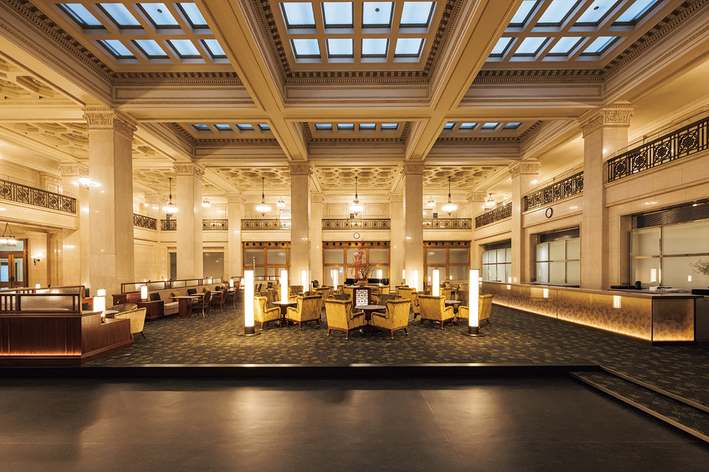
Мэйдзи Сэймэй-кан называют вершиной классического стиля в японской архитектуре, и в 1997 году он первым из зданий эпохи Сёва стал важной культурной ценностью страны. В ноябре 2025 года здание обновили: расширили выставочную часть и открыли кафе прямо в главном зале.
Квартал
Лондон у дворцового рва
Маруноути вырос в первый в Японии деловой квартал современного типа. Мэйдзи Сэймэй-кан стоит на краю рва Императорского дворца и считается одним из лучших сохранившихся зданий в западном стиле той эпохи.
Когда-то на этом месте стоял краснокирпичный «Мицубиси № 2». Его, как и «Мицубиси № 1», законченный в 1894 году, спроектировали британский архитектор Джосайя Кондер и его любимый ученик Тацудзо Сонэ. Джосайя Кондер (1852–1920) приехал в Японию преподавать архитектуру и воспитал первое поколение японских архитекторов западной школы. Тацудзо Сонэ (1853–1937) был среди его первых учеников и стал одним из столпов японской архитектуры. Вокруг одна за другой вырастали трёхэтажные конторы в западном стиле, и улицу, похожую на лондонскую, прозвали «Иттё Рондон», «квартал Лондона».
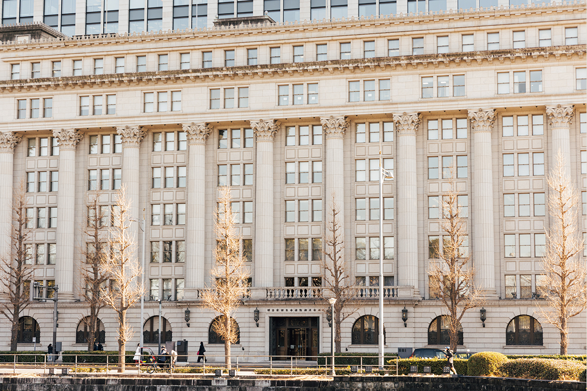
Мэйдзи Сэймэй появилась в 1881 году как первая в Японии современная компания страхования жизни (в 2026 году это Мэйдзи Ясуда). Дела шли в гору, и компания вместе с двумя другими страховщиками въехала в «Мицубиси № 2», построенный через год после первого дома. Со временем здание перешло к Мэйдзи Сэймэй, компания купила и соседний участок. Победил в конкурсе проект Синъитиро Окады, и ради большой новой штаб-квартиры решили снести добротный и ещё вполне пригодный дом. Строительство заняло три года и семь месяцев, и в 1934 году Мэйдзи Сэймэй-кан был готов.
Архитектура
Античный ордер в конторе эпохи Сёва
Здание из стального каркаса с железобетоном поднимается на восемь этажей и уходит на два под землю. Заказчик просил «торжественную, прочную и красивую на вид архитектуру», и снаружи и внутри её построили в классическом стиле, восходящем к Древней Греции и Риму. Большой зал для клиентов внутри конторского здания по тем временам был редкостью.
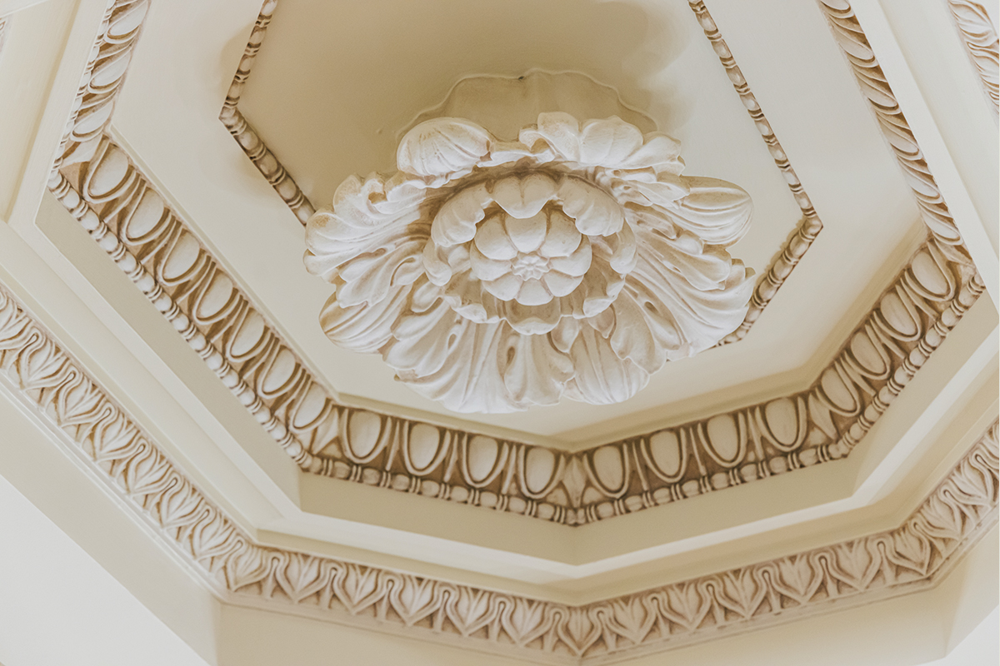
Тонкая отделка до мелочей сделана руками мастеров, а техника была самой передовой для своего времени. Здание прославилось как лучшая контора начала эпохи Сёва.
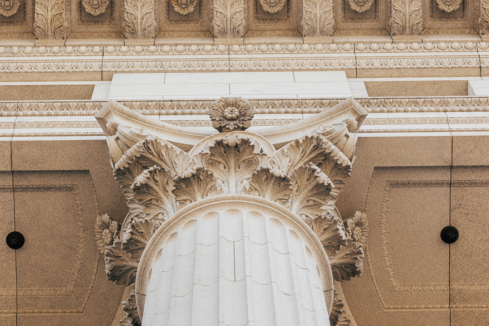
В войну здание сильно пострадало, но его восстановили по первоначальным чертежам. С годами оборудование устарело, и в конце 1980-х провели обследование прочности и сейсмостойкости. После 1989 года Мэйдзи Сэймэй решила «сохранять историческое здание, активно им пользуясь», и сохранить его целиком.
Кафе
Чай в бывшем операционном зале
Очередное обновление закончилось в ноябре 2025 года, и в двухсветном зале открылось «Мэйдзи Ясуда кафе Маруноути». Здесь когда-то рядами стояли столы и стулья: это был операционный зал страховой компании. Чтобы больше людей увидели интерьер важной культурной ценности, зал превратили в кафе, куда может зайти любой.
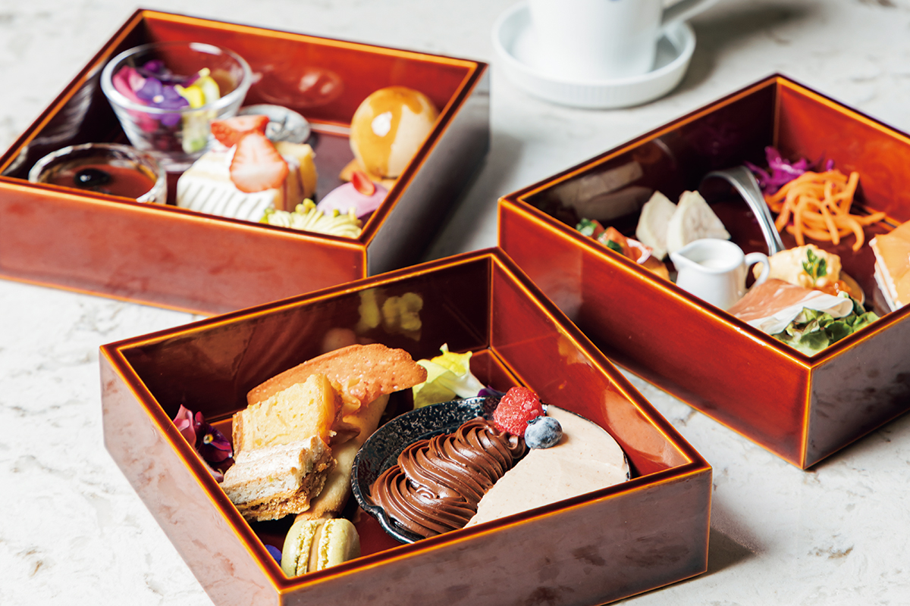
И большое обновление 2001 года, которое шло три года, и работы 2025 года строились на одном принципе: сохранять ценное здание, продолжая им пользоваться. Устроить кафе внутри важной культурной ценности было непросто: охрана памятника спорила с нуждами оборудования, и решения приходилось искать на каждом шагу. Но компания считала это верным путём: беречь облик Маруноути и оживлять квартал, чтобы здание и его культура дошли до будущих поколений.
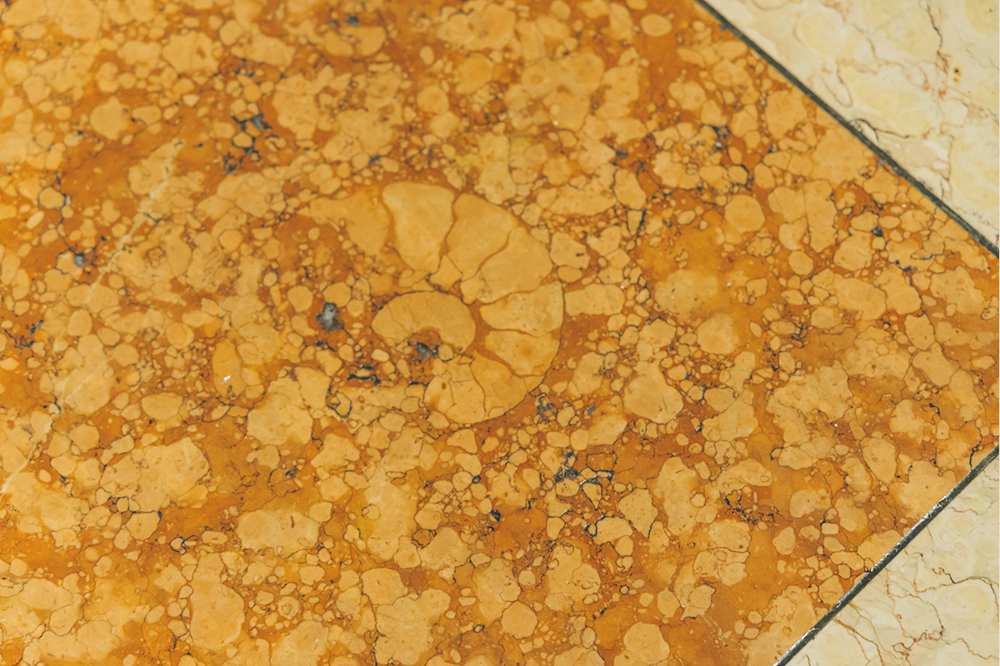
Зодчие
Команда лучших мастеров своего времени
Архитектурным консультантом был Тацудзо Сонэ, к тому времени патриарх японской архитектуры. Фасады и интерьеры проектировал Синъитиро Окада (1883–1932), мастер исторических стилей, по проектам которого с 1910-х до начала 1930-х годов построили театр Кабуки-дза и восстанавливали собор Николай-до. За конструкции отвечал Татю Найто (1886–1970), автор Токийской телебашни, башни Цутэнкаку в Осаке и телебашни в Саппоро. Проверка показала, что здание с самого начала соответствует нынешним нормам сейсмостойкости. Строила компания Takenaka, работавшая на многих исторических стройках, а мебель и интерьеры создал отдельный мастер. Для каждого зала он подобрал свой западный классический стиль, и мебель точно совпадает с архитектурой.
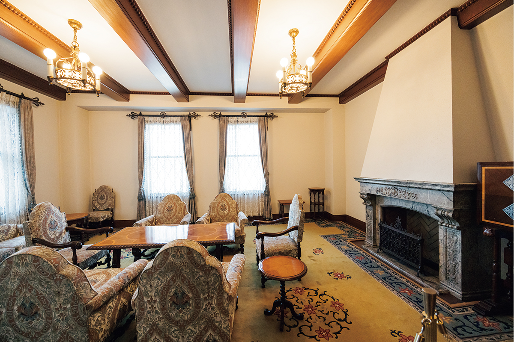
Над Мэйдзи Сэймэй-кан вместе работали лучшие мастера японской архитектуры той поры, но Вторая мировая война нанесла ему тяжёлый урон.
Техника
Пылесос в стенах и почта по трубе
Внутри здание было оснащено по последнему слову техники 1930-х годов: кондиционирование, лифты, центральный пылесос и почтовые желоба.
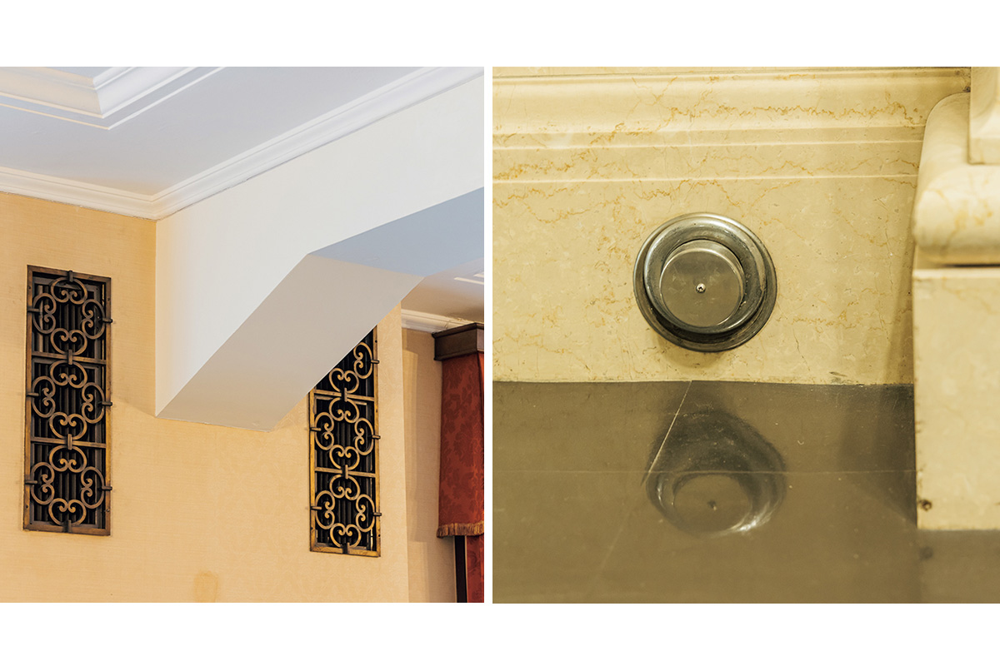
На каждом этаже есть по два почтовых желоба. Письмо, опущенное на любом этаже, падало в общий ящик внизу.
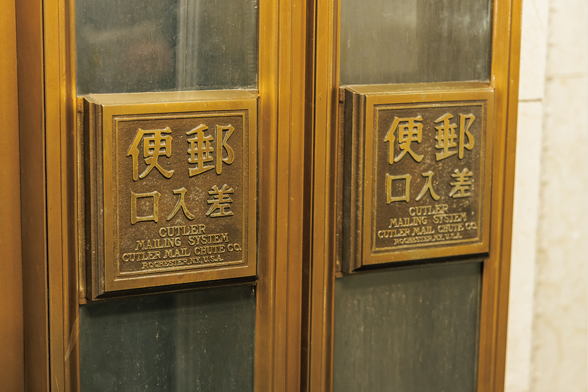
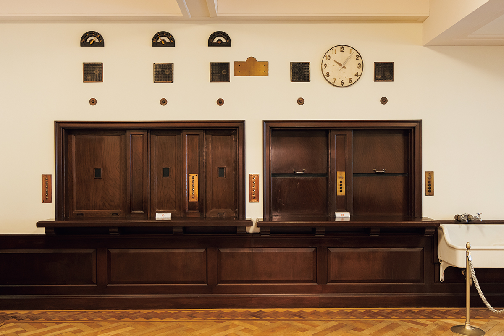
В войну по указу о сборе металлов здание отдало государству красивые светильники, бронзовые двери, перила и другие металлические детали. От пожаров при бомбёжках оно уцелело, но после поражения его заняли оккупационные власти и отдали под штаб Дальневосточных ВВС США. Здание оставалось занятым 11 лет, и американцы переделали его целиком: стены и потолки, например, закрасили синей и зелёной краской, и дом приходил во всё больший упадок.
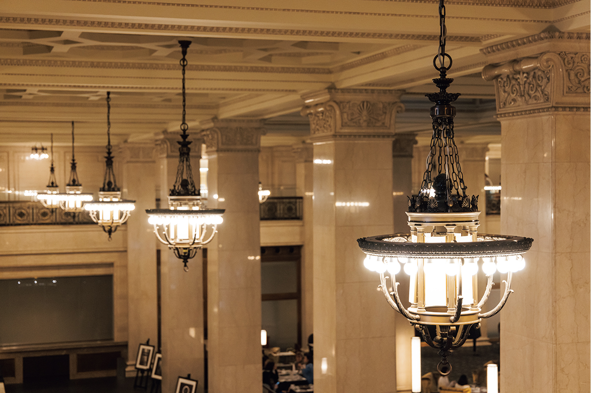
Когда здание вернули, первым делом его отремонтировали: отданный в войну металл и переделки американцев восстановили точно по старым образцам. Потом, в годы бурного роста экономики и «экономического пузыря», здание перестраивали и обновляли технику, но главным всегда оставалось сохранить его облик времён постройки.
Визит
Что посмотреть, кроме кафе
В 2026 году первый и второй этажи Мэйдзи Сэймэй-кан открыты бесплатно, есть аудиогид. Вокруг кафе устроили новую выставку: модели здания, чертежи и ценные документы, которые раньше лежали на складе. На втором этаже в первоначальном виде сохранились зал заседаний, где в годы оккупации решалась судьба Японии, приёмные, кабинеты и столовая. В здании работает и галерея музея «Сэйкадо Бунко», переехавшая сюда из другого района Токио в 2022 году: в ней можно спокойно рассмотреть восточное искусство, в том числе чашу ёхэн-тэммоку, национальное сокровище Японии.
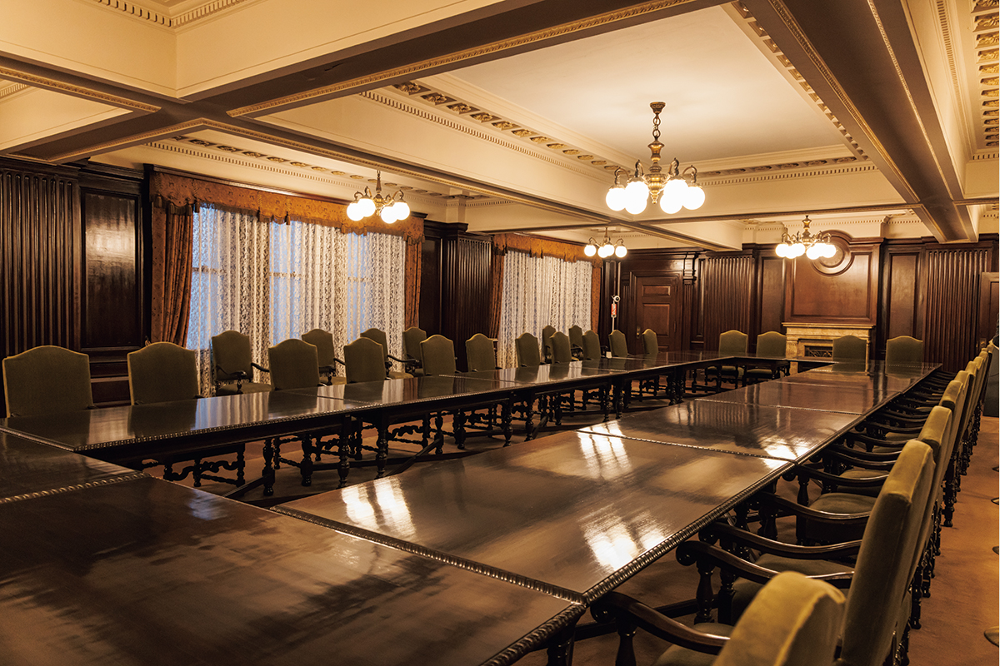
Обойдя здание, загляните в кафе: здесь встречаются бурная история эпохи Сёва и прекрасная архитектура.
Хроника Мэйдзи Сэймэй-кан
- 1929: выбран проект Синъитиро Окады.
- 1930: 12 сентября освящение земли, начало строительства.
- 1932: 4 апреля Синъитиро Окада внезапно умер, надзор за проектом принял его младший брат.
- 1934: 31 марта здание закончено, 14 апреля открыто, 14 мая начата работа.
- Годы войны: по указу о сборе металлов здание отдало бронзовые двери, перила, светильники, лифты.
- 1945: конец войны, в сентябре здание занято под штаб Дальневосточных ВВС США.
- 1946: в зале заседаний второго этажа проходит Союзный совет для Японии с представителями США, Великобритании, Китая и СССР.
- 1956: здание возвращено, полный ремонт и восстановление металлических деталей.
- 1968: большая перестройка при пристройке нового корпуса (снесён в 2000 году).
- 1981: пристроен ещё один корпус (снесён в 2000 году).
- 1997: здание признано важной культурной ценностью Японии.
- 2001: начато обновление в связи со строительством соседней высотки Мэйдзи Ясуда Сэймэй.
- 2022: в здании открылась галерея музея «Сэйкадо Бунко».
- 2025: открылось «Мэйдзи Ясуда кафе Маруноути».
«Мэйдзи Ясуда кафе Маруноути»
- Адрес
- Токио, район Тиёда, Маруноути, 2-1-1, Мэйдзи Сэймэй-кан
- Часы работы
- 10:30–18:30 (последний заказ в 18:00)
- Выходные
- понедельник и вторник
- Сайт
- attable.co.jp
Фото: Майко Фукуи.